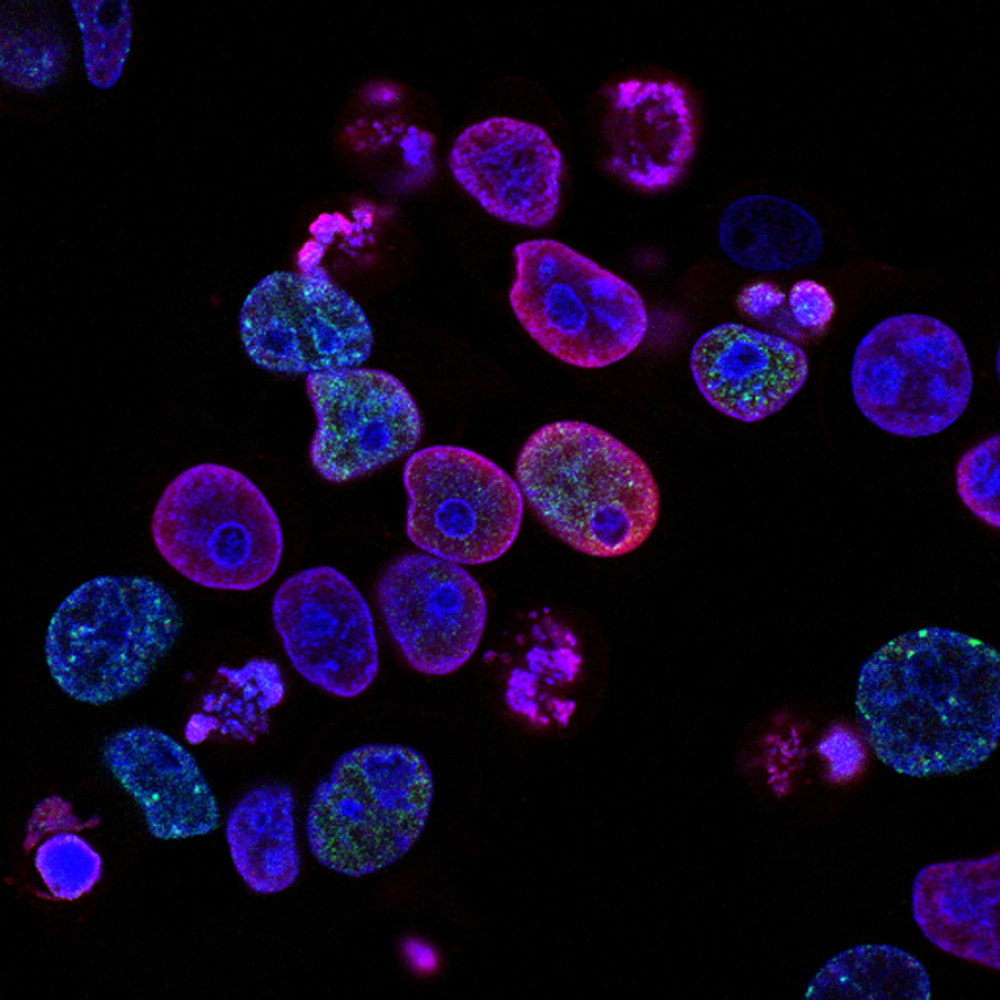

Lack of Access to Healthcare & Treatments

There are a number of things that prevent Latinos from getting cancer screenings and cancer care, therefore making it difficult for the cancer to be found or treated in time. One of the most prevalent are economic barriers and lack of insurance, taking time off from work or paying medical bills can be unaffordable to many. Some might not have enough public assistance since radioactive therapies, surgeries, and chemotherapy are expensive. Others may not qualify for enough coverage from their insurance, if they have any, since over 32% of Latinos in the U.S. have health insurance; without insurance, it’s less likely that they get regular cancer screenings. Besides this, they might not have someone to watch their children, a way of transportation to a doctor/hospital, or be able to find enough Spanish-speaking medical professionals.
Cancer Statistics
There are many inequalities when it comes to Latinos and cancer. Latinos are more likely to find cancer at an advanced stage and have a worse quality of life after their diagnosis than non-Hispanic whites. Latinas get breast cancer at younger ages than white women and the survival rate for Latinas with cervical cancer is 50% lower than in non-Hispanic whites. Additionally, Hispanic men, though they get diagnosed less than non-Hispanics, have a higher chance of death when it comes to prostate cancer. Cancer is the leading cause of death for the Hispanic community, as it is responsible for over 22% of deaths. The lack of resources and testing mentioned above is a large contributor to these disparities.
Lack of Hispanics in the Medical Field

Going to the doctor can be frightening, especially when the visit is concerning cancer. At these times, a feeling of familiarity can bring the comfort needed to increase someone’s trust in medicine. For the Hispanic community, many of whom are taught not to believe in American medicine, this feeling is crucial. Many Latinos don’t speak English and even if they do, a Spanish-speaking doctor usually will get them to open up more than one who only speaks English.At the moment, only around 3% of the U.S.’s doctors are Hispanic, and Latina’s make up 3.4% of that statistic. This is why programs that encourage Hispanics to get into medicine, especially oncology, are so significant.
Mental Health Effects

A third of individuals with cancer deal with mental health issues after their diagnosis. Unfortunately, Latinos are more susceptible to emotional stress in this situation due to various factors such as economic pressure, young diagnosis, lack of resources, and more. Traditional images of strength or masculinity intensify this stress by viewing it as “weak” and causing shame. In many cases, cultural norms might affect how someone views their mental health, with some Hispanics suffering but refusing to use the help they might have available to them since they were taught that it isn’t real. Though it’s important to respect someone’s beliefs, deconstructing these harmful ideas and helping Hispanics heal in their own way is crucial.